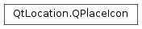

QPlaceIcon¶
Synopsis¶
Functions¶
- def
__eq__(other) - def
__ne__(other) - def
isEmpty() - def
manager() - def
parameters() - def
setManager(manager) - def
setParameters(parameters) - def
url([size=QSize()])
Detailed Description¶
The
PySide2.QtLocation.QPlaceIconclass represents an icon.The typical usage of an icon is to use the
PySide2.QtLocation.QPlaceIcon.url()function to specify a preferred icon size.QUrl iconSourceUrl = place.icon().url(QSize(32,32)); //A default icon may also be requested like so iconSourceUrl = place.icon().url();The icons are typically backend dependent, if a manager backend does not support a given size, the URL of the icon that most closely matches those parameters is returned.
The icon class also has a key-value set of parameters. The precise key one needs to use depends on the plugin being used. These parameters influence which icon URL is returned by the manager and may also be used to specify icon URL locations when saving icons.
If there is only ever one image for an icon, then QPlaceIcon::SingleUrl can be used as a parameter key with a
PySide2.QtCore.QUrlas the associated value. If this key is set, then thePySide2.QtLocation.QPlaceIcon.url()function will always return the specified URL and not defer to any manager.
-
class
PySide2.QtLocation.QPlaceIcon¶ -
class
PySide2.QtLocation.QPlaceIcon(other) Parameters: other – PySide2.QtLocation.QPlaceIconConstructs an icon.
Constructs a copy of
other.
-
PySide2.QtLocation.QPlaceIcon.SingleUrl¶
-
PySide2.QtLocation.QPlaceIcon.isEmpty()¶ Return type: PySide2.QtCore.boolReturns a boolean indicating whether the all the fields of the icon are empty or not.
-
PySide2.QtLocation.QPlaceIcon.manager()¶ Return type: PySide2.QtLocation.QPlaceManagerReturns the manager that this icon is associated with.
-
PySide2.QtLocation.QPlaceIcon.__ne__(other)¶ Parameters: other – PySide2.QtLocation.QPlaceIconReturn type: PySide2.QtCore.boolReturns true if
otheris not equal to this icon, otherwise returns false.
-
PySide2.QtLocation.QPlaceIcon.__eq__(other)¶ Parameters: other – PySide2.QtLocation.QPlaceIconReturn type: PySide2.QtCore.boolReturns true if this icon is equal to
other, otherwise returns false.
-
PySide2.QtLocation.QPlaceIcon.parameters()¶ Return type: PySide2.QtCore.QVariantMapReturns a set of parameters for the icon that are manager/plugin specific. These parameters are used by the manager to return the appropriate URL when
PySide2.QtLocation.QPlaceIcon.url()is called and to specify locations to save to when saving icons.Consult the plugin documentation for what parameters are supported and how they should be used.
-
PySide2.QtLocation.QPlaceIcon.setManager(manager)¶ Parameters: manager – PySide2.QtLocation.QPlaceManagerSets the
managerthat this icon is associated with. The icon does not take ownership of the pointer.
-
PySide2.QtLocation.QPlaceIcon.setParameters(parameters)¶ Parameters: parameters – PySide2.QtCore.QVariantMapSets the parameters of the icon to
parameters.
-
PySide2.QtLocation.QPlaceIcon.url([size=QSize()])¶ Parameters: size – PySide2.QtCore.QSizeReturn type: PySide2.QtCore.QUrlReturns an icon URL according to the given
size.If no manager has been assigned to the icon, and the parameters do not contain the QPlaceIcon::SingleUrl key, a default constructed
PySide2.QtCore.QUrlis returned.
© 2018 The Qt Company Ltd. Documentation contributions included herein are the copyrights of their respective owners. The documentation provided herein is licensed under the terms of the GNU Free Documentation License version 1.3 as published by the Free Software Foundation. Qt and respective logos are trademarks of The Qt Company Ltd. in Finland and/or other countries worldwide. All other trademarks are property of their respective owners.